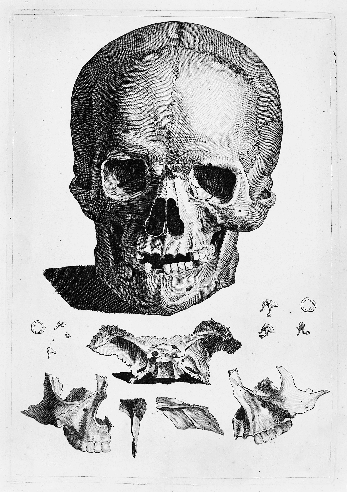

A arte de desenhar esqueletos
Desenhos de crânios
Primeiro desenho

Vemos na imagem um desenho de um crânio. No desenho percebemos três características:
- Uso das cores preto e branco.
- Traços realistas.
- Chama a atenção por conta da natureza do desenho.
Clique aqui para um guia de como desenhar este crânio.